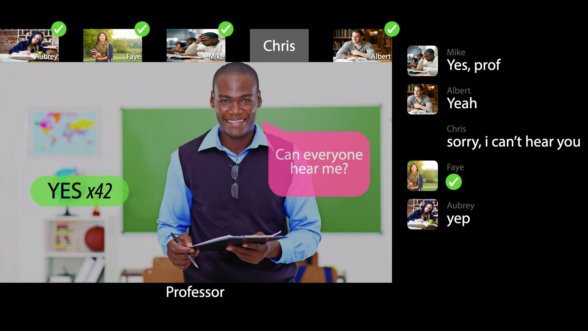
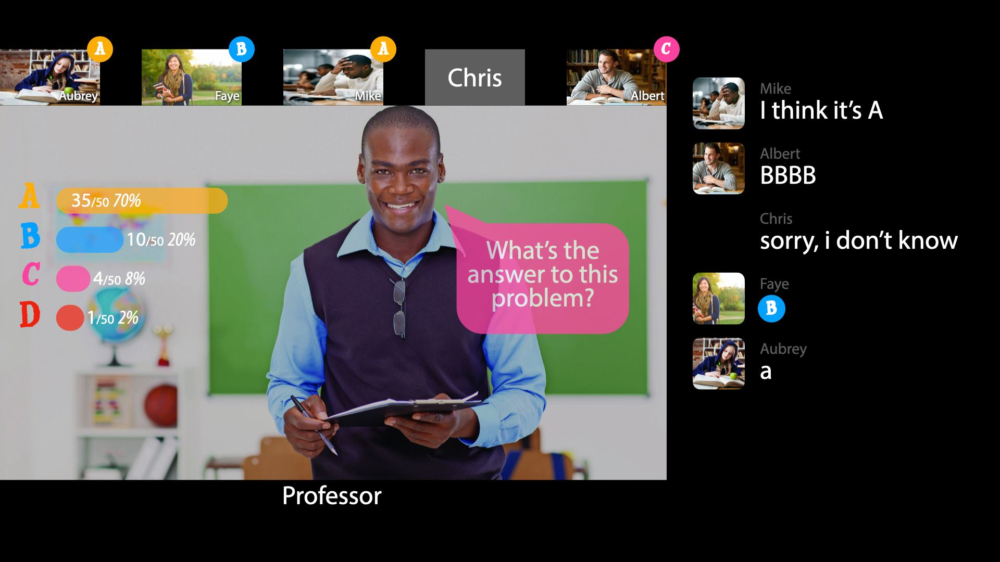
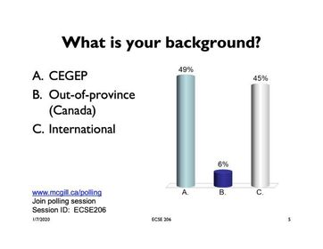
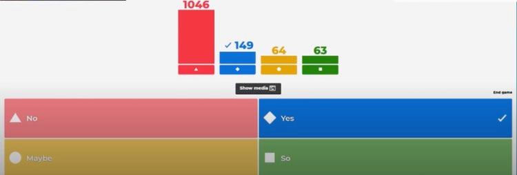
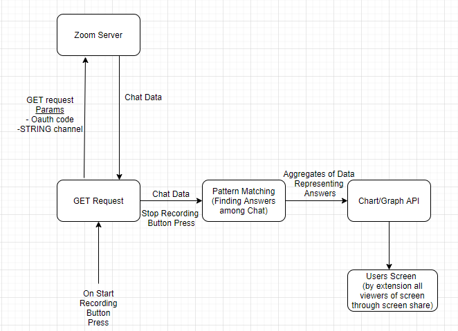

Proposal
- Observations
- Personas
- Problem
- Use Cases
- Related Products
- Product Comparison
- High Level Design
- Feasibility
Observations
Zoom Business Meeting
Relatively small-medium sized company, meeting makes up all supervisors and high ranking members of the company. The demographic of the meeting is mostly middle aged men whomst I can estimate are around 40-50. This sums up to about 18 people, having a meeting just under 2 hours long. The gentleman leading the meeting has a set of slides he goes through taking about half the time, some individuals are visibly bored. He discusses the state of the company as well as how they plan to cope with the pandemic. With the remaining time he aks for questions, those are answered and some discussion is had. Throughout the meeting the boss seems jovial as if he aims to keep moral high.
Related Persona
The man leading this meeting seems around 50, and as I mentioned seems very happy. His aim is to relay information to hissubordinates while still giving off a sense of calm and having them interested in improving the company. At times he even mentiones how excited individuals should be to deal with this situation and how a pandemic can be an oppurtunity. He seems well aware of the tiredsomness of the content and seems to try his best to make the information as digestable as possible. The observations lead to the persona of, Jeffrey, the boss of a medium sized company.
Zoom University Lecture (Professor)
Relatively large computer science course, where the lecture is made up of the professor and the students enrolled in the course. The demographic of the lecture is mainly male and female students ranging between 18 and 24 years of age, as well as the professor, who is in his 40s. In total, we have about 125 people participating in a lecture that is generally 90 minutes long. The professor spends some time going through the lecture slides, which introduce some new concepts relevant to the course, and occasionally asks questions by linking a poll in the zoom chat. He then proceeds to do a live demonstration in order to show how these concepts may be applied. When the demo is over, the professor asks if there are any questions. He then continues the lecture, repeating the above pattern until the class time has run out. The engagement from the students throughout the lecture was quite low, with very few audible questions being asked and with half the messages in the chat not being relevant to the current material.
Related Persona
The professor giving the lecture is in his 40s and seems to be very interested in the material he is teaching. He wishes to present the material in a way that helps the students remain engaged with the lecture so that they actually process the information coming their way. When he begins a live demo, the professor encourages the students to follow along and do the activity themselves instead of just watching him do it. As mentioned previously, he also asks questions via polling and checks to see if there are any questions following demos. All the while, the professor tries to keep a high level of energy so that the students stay focused and do not zone out. Even with all of this, the professor notices that the level of engagement is not as high as he would like. These observations lead to the persona of Robert, a computer science university professor.
Zoom University Lecture (Student)
An ordinary university lecture held online because of the quarantine. The professor is a middle aged men around 55 years old. He is very respectful and wise, being an expert in his field, but a bit unfamiliar with the latest technologies. He is used to teach in a classroom facing the students. The students are enthusiastic about the topic, but are also generally shy and would rather communicate in private instead of shouting out a question in public.
According to the regulations of the university, the professor is responsible to record the lecture and upload it so that students in different time zones can watch it later. However, some students realize that the red record sign is not showing up. They mention the problem in the chat-box of Zoom, but the professor does not notice it. More students join the conversation in the chat box, and they are gradually getting off the topic.
One of the students decides to notify the professor with audio, so she turns the audio on and speaks, 'Hi professor, you are not recording. However the professor is too focused on the material, and he does not notice he voice. Other students are impressed by her courage and the chat box is getting flooded with 'F's.
Another student changes his profile picture to 'Prof, Not Recording'. After five minutes, the professor finally notices the message. He is frustrated and disappointed at the mistake, and decides to re-record the lecture later instead.
Related Persona
For a student, it is incredibly harder to deliver such a simple message on an online platform than in a real classroom. Especially after another fellow student has already tried multiple methods, including by text and by voice, in front of the entire class, but all failed. It would be easier if a message being sent by multiple users in a short period of time to be automatically visualized in the centre of the streaming screen and brings the attention of all the users, including the lecturer. These observations lead to person 2, Chris, the student of engineering.
Personas
Persona 1: Jeffrey Gold
Age 51, CEO of a medium sized company in the tourism sector.
|
Jeffrey runs a medium sized company, to which coronavirus has brought a new era. He now finds himself in an environment where work is all online and he must communicate with his subordinates through video chat. He leads meetings often where he goes over the future plans of the company. Throughout the trying time he carries a strong face, he wants to come off as happy and cordial for his employees to see no doubt. He wants his meetings to be interactive and somewhat enjoyable to help convey the aforementions semblence of all is well. This isn't easy as he grew up in a landscape where person to person interaction was just how business was done. Jeffrey finds it difficult to get that same feeling speaking remotely to his employees. His job goes from 9-5 and any time spent not at work is spent with his family. |
Persona 2: Robert Woods
Age 43, University Professor
Robert has just recently transitioned into being a full time professor, having worked for several software companies over the last two decades. This working experience has led him to become very sociable, seeing as most software projects require a lot of collaboration. However, he does not have a lot of teaching experience, as he was an assistant professor for only 2 years and has just started as a full time professor. This made the transition from traditional to zoom lectures especially difficult for Robert, as he now needed to find ways to keep students engaged through a video call, while hardly even knowing how to do so in person. He tries by asking questions to his class, which he does through an external polling site. Robert is very passionate about the material he is teaching and wants to instill some of that passion is his students. He is disappointed to see the level of engagement his polls are receiving, especially considering the amount of time they take to set up.
Persona 3: Christopher Lee
Age 21, student of McGill Engineering
Chris took the 16-personality test, and his result was INFP. He is very humous and relaxed when he stays with his close friends, but also incredibly shy in front of people whom he is not that familiar with. He rarely raises hand during a lecture, instead, when he has a question, he either asks a friend sitting next to him, or stays after class and asks the professor privately. He always comes up with creative ideas, but he chooses to express them after someone else has shared their ideas. During an online lecture, it is insecure for him to interrupt the lecturer. He wants to know if his concerns and questions are puzzling others as well.
Problem & Solution: Live Polling Integration for Video Conferencing
The lack of ability for professors, teachers and general conference leaders to elicit responses from the class has become somewhat of a crutch to learning. Live polling dramatically increases how interactive a lesson can be. Leaders should be able to ask students questions on wim and almost instantly get results without interrupting the flow of a lecture to go to an external program. After the lecturer raises a question, there will be several responses appearing in the chat box instantly. The system automatically detects clusters of responses that were sent in a short period of time, such as yes, yeah, yep, check mark, perfect sign, (and the click/tap of the check amrk button provided in Zoom itself) then combine them and visualize the result on the screen as YES x5. This number will increase as soon as another user sends a new response. The responses do not have to be YES/NO (image 1), they can be a number (image 2), a word, or a letter. Anything that was sent multiple times by different users in a short period of time will be recorded. Also, the lecturer is able to activate a yes/no question prompt themself. A more complex version allows users to poll within the video conferencing interface, without having to open turnitin in another browser, which creates even more unnecessary fragmentation from the fragile virtual conversation. When the system detects clusters responses containing all of A, B, C, D, the visualisation automatically becomes a bar chart, with the detailed information of each choice. The chart updates whenever a new response is made. The lecturer can also design the questions in advance, instead of completely being triggered by the system automatically. Conference leaders will be able to select from a series of question types through a selection field reminiscent of how you would choose a graph type in Excel. The responses made by the users will also be visible on their profiles. When the lecturer switches to gallery view (where all the user profiles are shown), they can see the response of every individual user. This creates a feeling similar to when the lecturer looks around at the entire classroom / conference room / auditorium, and creates a more natural person space. In conclusion we feel there are major deficiencies in the interactivity of online classes, deficiencies we feel well built, smooth live polling may help rectify.
Image 1
Image 2
Use Cases
Use Case 1: Based on Chris from Persona 3
Chris sits in front of the laptop and gets ready for the lecture which will start in 3 minutes. He clicks on the Zoom app icon and the app starts running. He then sees the image of the professor and other students joining in separately. The professor starts the lecture. Another fellow student notices that the professor forgets to record the lecture, so he turns on the mic and tries to tell the professor. However, the professor does not notice it, maybe because his speakers are bad. Chris notices this, and types the message 'Prof, Not Recording!!!' in the chat box. Other students notice this too, and start to send messages such as 'NOT RECORDING', 'Prof, you are not recording the lecture', and 'not being recorded' into the chat box. The professor does not notice the chat box, but the system detects the messages and displays a 'not recording x32' on the screen, the professor finally notices it and corrects himself. During the lecture, Chris hears the professor asking 'what do you think the answer should be?' He thinks the answer for this question is 9, but he chooses to wait and see what others' answers are. He sees his fellow classmates entering different answers into the chat box, and a pie chart is then generated on the screen, illustrating the numbers of people sending different answers. He sees that most classmates have sent 7, and 9 is the next most popular response. He knows that 7 is a wrong answer, because he has spotted the trap in the question. He realizes that his answer 9 is correct, and he also realizes the professor got the class again. Chris types 9 in the chat box and sends it, the portion of 9 in the pie chart increases a little bit. Chris notices that more and more people are choosing 9 as time goes by, and he is amazed to see the dynamic process of the collection of the answers from his classmates.
Use Case 2: Based on Robert from Persona 2
Robert prepares all his material for the next lecture, which will begin in a few minutes. At the designated lecture time, Robert begins the zoom meeting and waits for the students to arrive. In the meantime, he makes sure that the live polling system is up and running, ready for the questions and comments from the students. It is now time for the lecture to begin, so Robert starts going through the material he prepared for today. After some time, Robert sees the message 'audio! x20' pop up on his screen, meaning that the system has read in 20 instances of this message from the students in the class. Robert checks his microphone and realizes that there is a static sound coming from it, so he unplugs it and then plugs it back in, which appears to fix the issue. Later on in the lecture, Robert wants to make sure that the students are keeping up with the material and actually paying attention. He asks a question to the class, and gives them four potential answers which are labeled A, B, C, and D. The students then begin to enter their answers in the chat, and the professor choses what type of graph he wants to use to present the results. Robert elects to use a pie chart to depict the amount of As, Bs, Cs, and Ds received, which appears on the screen and continues to update while answers are coming in. Knowing that the correct answer was B, Robert is disappointed to see that only 60% of the class got this correct. He then closes the chart, and goes back in the slides until he reaches the section that relates to the question that was asked, and quickly goes over the information again. Robert then asks the class the same question and gives them the same options to see if more people now understand and know the right answer. He is delighted to see that now almost the whole class answered the question correctly, and he can now move on in the material. Robert realizes how quick this question and answer period was, seeing as the system takes little to no set up, and continues to use it as much as he can.
Related Products
Most related products are either focusing on polling/collecting answers only, or focusing on live streaming and make the visualization of information as a small feature. They barely combine the two functions together.
TurningPoint
|  |
In TurningPoint, the multiple choice questions would be designed by the lecture holder in advance. When the lecture holder wants to collect answers during a live lecture or online lecture, they will pause the lecture, then guide the audience to this application for a polling session. The audience have to sign in with their email account, then enter the ID for this particular polling session to join. The lecture holder can stop the polling when they see most of the audience has provided answers, then the visualization of the answers will appear. Normally the ratio of the audience choosing different answers will be shown in a bar or pie chart. The choice of each audience will be recorded, but will not be displayed, so that the polling is anonymous. |
Kahoot!
(stylized as Kahoot!, will be referred as Kahoot)
Kahoot is very similar to TurningPoint, except that it is more game-based, and education-oriented. Teachers also have to design the multiple choice questions, and there has to be a correct answer specified. Students do not have to sign in with email, they only have to enter the ID of the session, and they can create their own username. In TurningPoint, the lecturer can switch to a question whenever they want, while in Kahoot, normally a set of questions will be answered in a row. After answering each question, the score of every student will be calculated based on whether their answers are correct, and the time they consumed to answer. The top several scores will be displayed. After the whole set of questions are answered, the student with the highest score becomes the winner.
Live streaming services such as Kuaishou (sometimes stylized as Kwai)
|
Kuaishou provides the streaming service, which is similar to TikTok and Twitch. When a user starts live streaming, the audience can interact with the user in a chat box, and the messages in the chat box will be displayed. When multiple messages contain the same information, the system will automatically detect it, and display it on top of all the messages, with a number indicating how many times it has appeared. The number keeps growing when more users send the same message. |
Product Comparison
Compared to softwares focusing on collecting answers for pre-designed questions, our product is more impromptu. It is triggered whenever necessary during the lecture, without having to design the questions in advance, or explicitly pause the lecture and switch to the polling session. The questions in TurningPoint and Kahoot are always designed specifically for the topic, but in real online conferences, the lecturer is very likely to ask random questions which are impossible to predict, such as 'Can you all hear me?' or 'Does this part make sense to everyone?'' Our product can collect answers for these questions as well, as long as multiple responses appear in the chat box in a short period of time. Another difference is that our product does not show the 'final' result as TurningPoint and Kahoot does, instead, it shows the dynamic process of the answers being detected, and users can see how the final answers converge.
Compared to streaming application such as Kuaishou, our product does more professional visualizations. Kuaishou only displays the message with the number of appearance after it. Our product, however, shows more detailed information, such as the percentage of number of users sending a specific message to the number of total users. Our product can also handle when more than one answer appear repeatedly in the chat box, and visualize the results with a bar or pie chart, thus showing the percentage of different answers.
High Level Design
The tool will run as a java standalone application that we create. On a button click, within our small application which will have a display similar to the commonly used snipping tool available on Windows computers, the program will capture chat logs of the current zoom session the user is in. The java program will do this using the Zoom API that offer a GET channel request to get the public or private message chat logs. Once the java program has the data it does pattern analysis to find common words, phrases, and other items it identifies as answers such as numbers. Then the results are aggregated and fed into a chart API method that visualizes the data. For a charting API there are multiple open source options such as charts4j (we have yet to select the best choice for us). Assuming the professor is screen sharing, the whole class will see these results.
Feasibility
As far as the initial concepts our idea was founded on, that is to give zoom meeting holders the ability to ask users questions and recieve answers in a siccinct mannor, the idea is very feasible to create. The zoom API allows developers to GET request a list of users chat messages. From there we can count up the affirmative messages and the negative messages to allow the host to atleast see the outcomes of a YES/NO type question. Extending this might prove more difficult but atleast for the base product we will be developing it is most definately feasible. We are a group of three software engineering which gives us the skills possible to make this tool a reality. Glen with a keen eye of design will ensure the way we impliment this extension to video conferencing looks clean. All of us with the skills learned in this class will makesure the product is not difficult to use for anyone. I estimate the base concept this idea is built on will take 30 hours of programming total. 4 hours to really understand the GET request that allows us to get chat from Zoom, 5 hours creating the application with its buttons and design outside from the prototyping I am sure we will do in class. 8 hours creating a smart pattern matching program, 2 hours finding a visualization program and then I have left 11 hours fixing the program from inevitable bugs and dealing with unexpected roadbumps. Just like the time estimations in a GANTT chart this is all an estimate based on my past experiance as a software engineer.